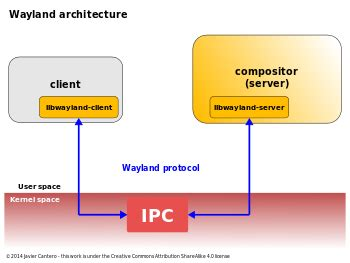

Cíl kapitoly: Popsat nízkoúrovňové fungování Waylandu a rozebrat abstrakci hardwaru pomocí knihovny wlroots.
Zatímco u X11 existoval samostatný X Server (který komunikoval s hardwarem) a na něj napojený Window Manager, ve světě Waylandu tyto dvě role splývají do jednoho programu zvaného Kompozitor (Compositor). Labwc je právě takovým kompozitorem. Bere přímo události z klávesnice a myši, zpracovává je, odesílá aplikacím a následně přijímá od aplikací hotové grafické buffery, které skládá na obrazovku.

libinput. Labwc přijme událost (např. pohyb myši o 5 pixelů vlevo), přepočítá ji přes svou interní mapu obrazovek a rozhodne, na které okno kurzor ukazuje. Výsledkem je extrémně rychlá odezva bez zbytečných prostředníků.